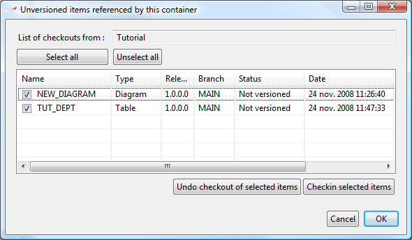
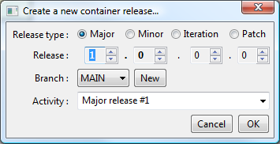

Containers elements of the repository allowing you to logically organize your database components. Typically a container should reflect a module of your database model / application. You can create as many containers as you need.
Containers allows you to structure your application by defining logical modules of a database model. Thus, working with containers will allow you to reuse parts of your database model for another application.
For example, you might need to develop a “user” module data model to handle authorization, logging in, rights and provide a single-sign-on feature to one of your application. You might also need to develop a logging system which will log information into your production database. It would be a good idea to create a container for such features so you will be able to reuse the exact same component in another application. This would save huge amount of time when designing new application and you will be able to capitalize your developments.
If you are familiar with “modular” developments, you might already have top-level application modules which need a corresponding data model to be present in your database to work properly. Some of these application modules will be shared between several applications (mostly low-level frameworks, but not only). If you map the frontiers of your application modules with frontiers of your database containers, you will be able to quickly deploy new applications, reusing your previous developments.
More, when your development team will grow, you will be able to affect some containers to team A and others to team B.
We advise you to think about a container organization which will match your business goals (maintenance, reuseability) before creating new components. neXtep Designer will then provide you a high level of flexibility to maintain, deploy and manage the lifecycle of your components.
Like every element in the neXtep designer environment, containers have a lifecycle through versioning information. The only thing important to retain is that a committed version of a container is sealed. That means that when you commit a container, the contents of this container will be forever frozen. The only way to modify contents of a container is to check-out it to create a new version.
Consequences are that you can only commit a container when all its content is committed. For convenience, trying to commit a container which has check-outed elements will prompt you with a list of the non-committed elements to “batch-commit” them.

Since containers might be delivered, note that versions assignment are user-based for containers. Each time you check-out or commit a container, you will be asked for a version number. We advise you to use a business-oriented numeration.

A container can be exported as a delivery modules. Have a look to the Build Engine documentation to learn how to create, manage and export delivery modules from containers. It is important to understand that every root-level containers will have their own lifecycle and though will have their own deliveries.
A container can be merged. It is literally a merge of 2 different versions of a same container. Merges are needed in an application lifecycle when you start to maintain several different versions in parallel. For example, as soon as you have a production release and a development release, you might need to perform merges if you have to publish a patch of your production release while developing a new release paralelly.